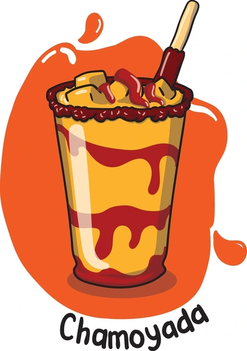
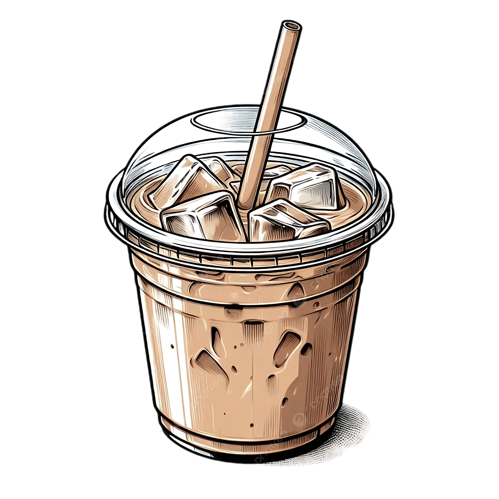
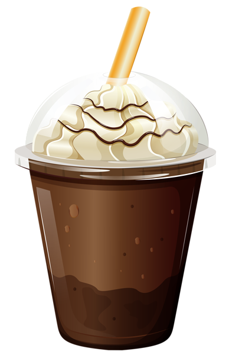

Nuestras Bebidas Frías

CHAMOYADA
Una refrescante explosión de sabor agridulce con chamoy y fruta.

CAPUCHINO HELADO
La cremosidad de un capuchino, pero servido bien frío.

AMERICANO HELADO
Un clásico americano, pero con el toque refrescante del hielo.

FRAPPÉ
La bebida fría perfecta, con base de café y textura granizada.